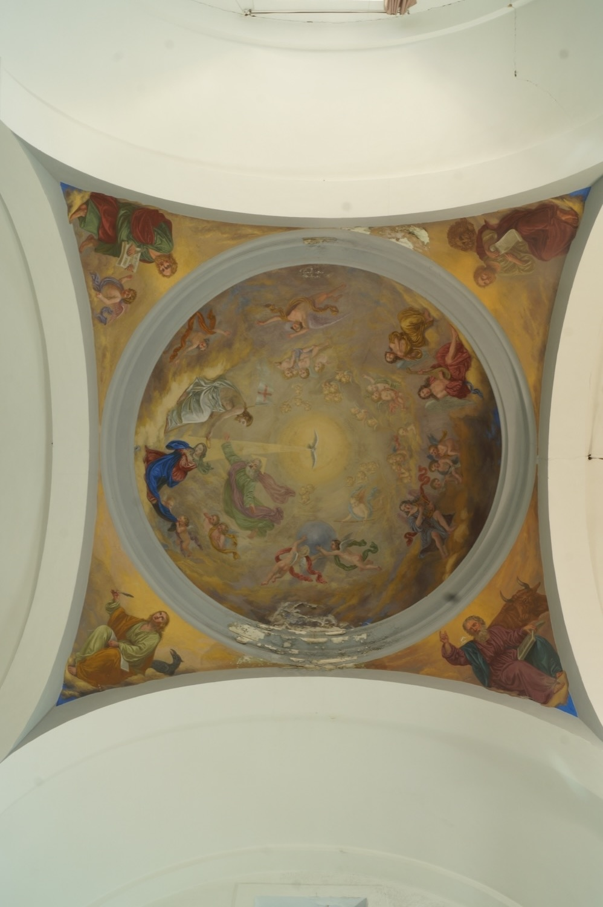

Els frescos d’aquest sòtil són obra del pintor italo-mallorquí Francesc Parietti Rigo, de l’any 1863. La imatge central representa la Coronació de la Verge Maria com a Reina del Cel, moment culminant de la seva glorificació. L’escena principal respon a una iconografia tradicional: Jesús posa una corona al cap de Maria en presència del Pare, sota la llum divina de l’Esperit Sant en forma de colom. Aquesta escena principal és acompanyada per un grup d’àngels músics, alguns àngels acòlits que sostenen un ceptre i un orbe (dos atributs de la Verge com a Reina del Cel i de la Terra) i alguns angelets que contemplen l’escena, de manera que la cúpula actua com a metàfora del cel.